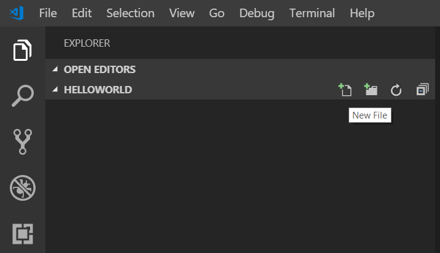
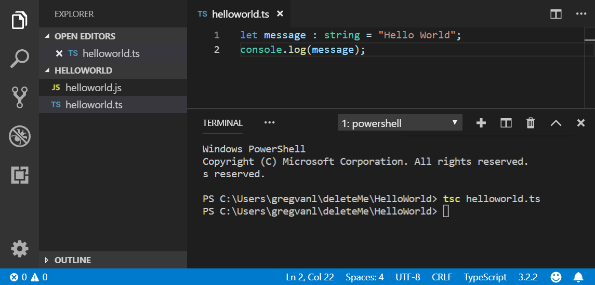
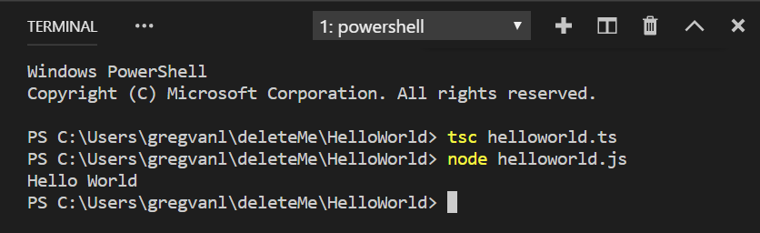
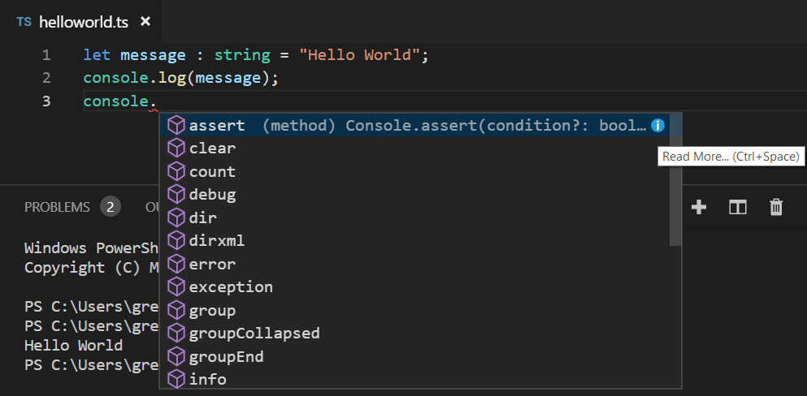
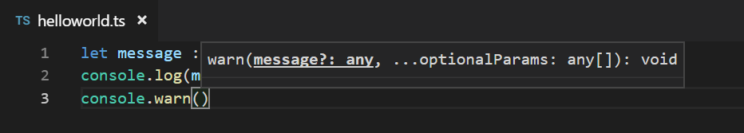
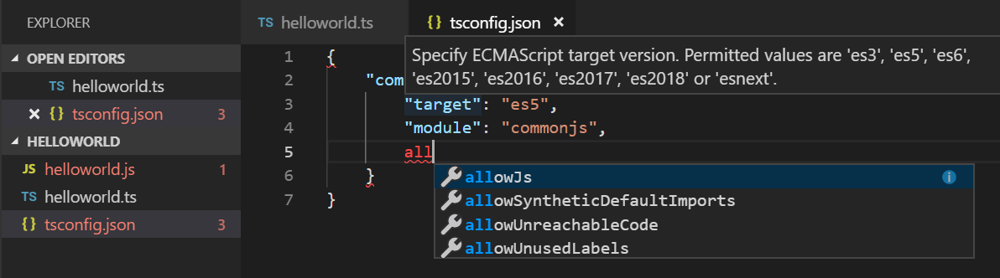
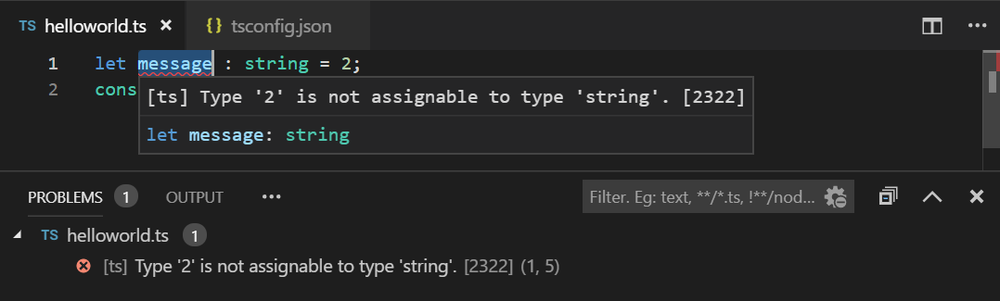
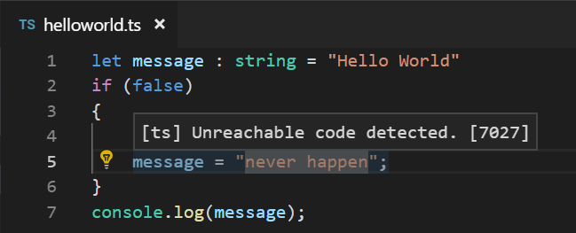
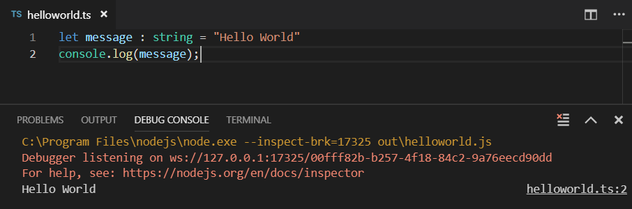
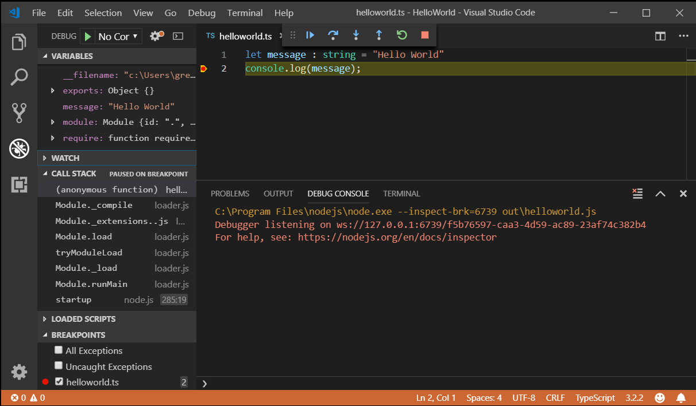

TypeScript tutorial in Visual Studio Code
TypeScript is a typed superset of JavaScript that compiles to plain JavaScript. It offers classes, modules, and interfaces to help you build robust components. The TypeScript language specification has full details about the language.
Install the TypeScript compiler
Visual Studio Code includes TypeScript language support but does not include the TypeScript compiler, tsc. You will need to install the TypeScript compiler either globally or in your workspace to transpile TypeScript source code to JavaScript (tsc HelloWorld.ts).
The easiest way to install TypeScript is through npm, the Node.js Package Manager. If you have npm installed, you can install TypeScript globally (-g) on your computer by:
npm install -g typescript
You can test your install by checking the version.
tsc --version
Hello World
Let's start with a simple Hello World Node.js example. Create a new folder HelloWorld and launch VS Code.
mkdir HelloWorld
cd HelloWorld
code .
From the File Explorer, create a new file called helloworld.ts.

Now add the following TypeScript code. You'll notice the TypeScript keyword let and the string type declaration.
let message : string = "Hello World";
console.log(message);
To compile your TypeScript code, you can open the Integrated Terminal (kb(workbench.action.terminal.toggleTerminal)) and type tsc helloworld.ts. This will compile and create a new helloworld.js JavaScript file.

If you have Node.js installed, you can run node helloworld.js.

If you open helloworld.js, you'll see that it doesn't look very different from helloworld.ts. The type information has been removed and let is now var.
var message = "Hello World";
console.log(message);
IntelliSense
In VS Code, you can see that you get language features such as syntax highlighting and bracket matching. When you were typing in the editor, you may have noticed IntelliSense, the smart code completions and suggestions provided by VS Code and the TypeScript language server. Below you can see the methods of console

When you select a method, you then get parameter help and can always get hover information.

tsconfig.json
So far in this tutorial, you have been relying on the TypeScript compiler's default behavior to compile your TypeScript source code. You can modify the TypeScript compiler options by adding a tsconfig.json file that defines the TypeScript project settings such as the compiler options and the files that should be included.
Add a simple tsconfig.json which set the options to compile to ES5 and use CommonJS modules.
{
"compilerOptions": {
"target": "es5",
"module": "commonjs"
}
}
When editing tsconfig.json, IntelliSense (kb(editor.action.triggerSuggest)) will help you along the way.

By default, TypeScript includes all the .ts files in the current folder and subfolders if the files attribute isn't included, so we don't need to list helloworld.ts explicitly.
Now to build from the terminal, you can just type tsc and the TypeScript compiler knows to look at your tsconfig.json for project settings and compiler options.
Change the build output
Having the generated JavaScript file in the same folder as the TypeScript source will quickly get cluttered on larger projects, so you can specify the output directory for the compiler with the outDir attribute.
{
"compilerOptions": {
"target": "es5",
"module": "commonjs",
"outDir": "out"
}
}
Delete helloworld.js and run the command tsc with no options. You will see that helloworld.js is now placed in the out directory.
See Compiling TypeScript to learn about other features of the TypeScript language service and how to use tasks to run your builds directly from VS Code.
Error checking
TypeScript helps you avoid common programming mistakes through strong type checking. For example, if you assign a number to message, the TypeScript compiler will complain with 'error TS2322: Type '2' is not assignable to type 'string'. You can see type checking errors in VS Code both in the editor (red squiggles with hover information) and the Problems panel (kb(workbench.actions.view.problems)). The [ts] prefix lets you know this error is coming from the TypeScript language service.

Quick Fixes
The TypeScript language service has a powerful set of diagnostics to find common coding issues. For example, it can analyze your source code and detect unreachable code which is displayed as dimmed in the editor. If you hover over the line of source code, you'll see a hover explaining and if you place your cursor on the line, you'll get a Quick Fix lightbulb.

Clicking on the lightbulb or pressing kb(editor.action.quickFix) brings up the Quick Fix menu where you can select the Remove unreachable code fix.
Debugging
VS Code has built-in support for TypeScript debugging. To support debugging TypeScript in combination with the executing JavaScript code, VS Code relies on source maps for the debugger to map between the original TypeScript source code and the running JavaScript. You can create source maps during the build by setting "sourceMap": true in your tsconfig.json.
{
"compilerOptions": {
"target": "es5",
"module": "commonjs",
"outDir": "out",
"sourceMap": true
}
}
Rebuild by running tsc and you should now have a helloworld.js.map in the out directory next to helloworld.js.
With helloworld.ts open in the editor, press kb(workbench.action.debug.start). If you have other debugger extensions installed, you need to select Node.js from the dropdown.
The debugger will start a session, run your code, and display the "Hello World" message in the Debug console panel.

In helloworld.ts, set a breakpoint by clicking on the left gutter of the editor. You will see a red circle if the breakpoint is set. Press kb(workbench.action.debug.start) again. Execution will stop when the breakpoint is hit and you'll be able to see debugging information such as variable values and the call stack in the Run view (kb(workbench.view.debug)).

See Debugging TypeScript to learn more about VS Code's built-in debugging support for TypeScript and how you can configure the debugger for your project scenarios.
Next steps
This tutorial was a quick introduction to using VS Code for TypeScript development. Read on to learn more about using VS Code's compiling and debugging support for TypeScript:
- Compiling TypeScript - Use VS Code's powerful task system for compiling TypeScript.
- Debugging TypeScript - Configure the debugger for your TypeScript project.
Common questions
Cannot launch program because corresponding JavaScript cannot be found
You've likely not set "sourceMap": true in your tsconfig.json and the VS Code Node.js debugger can't map your TypeScript source code to the running JavaScript. Turn on source maps and rebuild your project.